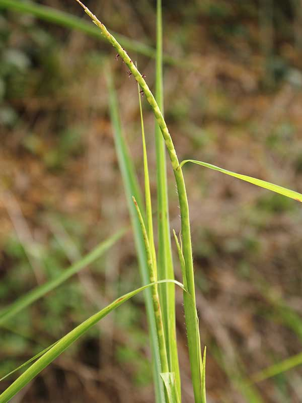
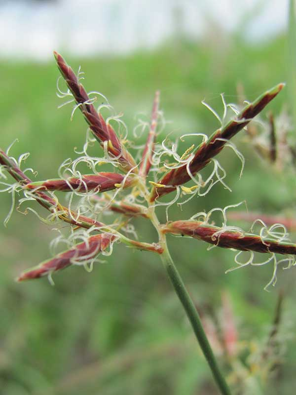
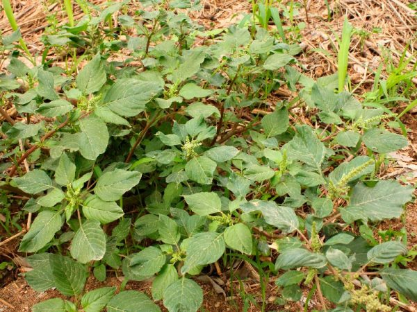
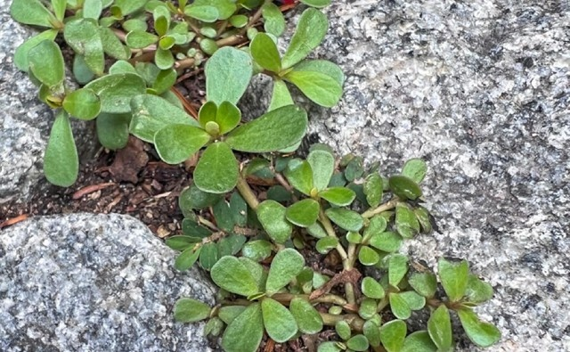
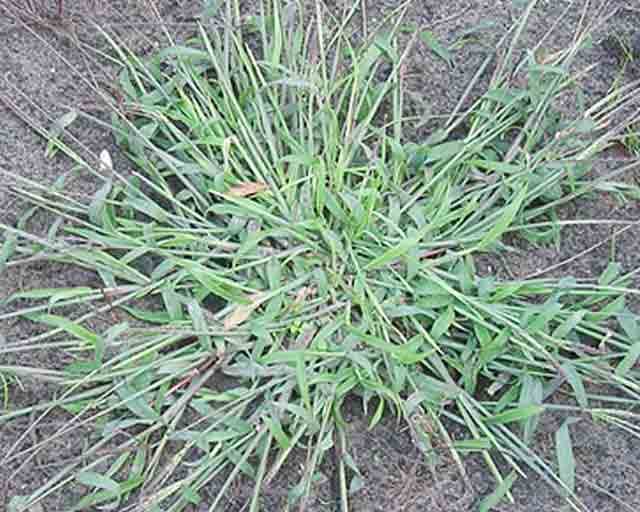

Martes, 26 de marzo
¿Por qué es importante?
En esta etapa (V3 - V4), las malezas compiten por agua, luz y nutrientes. Su control temprano favorece el crecimiento y rendimiento del maíz.
Cómo revisar
- Camine entre los surcos del cultivo.
- Observe 3 zonas diferentes del lote.
- Revise si hay plantas no deseadas cerca de la base del maíz.
- Verifique si las malezas superan 5 - 10 cm de altura.
Malezas frecuentes en maíz

Caminadora
Rottboellia cochinchinensis
Coquito
Cyperus rotundus
Bledo
Amaranthus spinosus
Verdolaga
Portulaca oleracea
Guardarrocío
Digitaria sanguinalis¿Qué hacer?
-
Si encuentra pocas malezas:
Retírelas manualmente.
-
Si hay alta presencia:
Realice control mecánico (azada o cultivador) antes de aplicar la fertilización.
Recomendación
Mantenga el cultivo libre de malezas durante las primeras semanas para obtener mejores resultados.